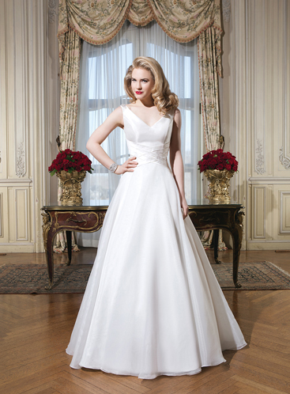
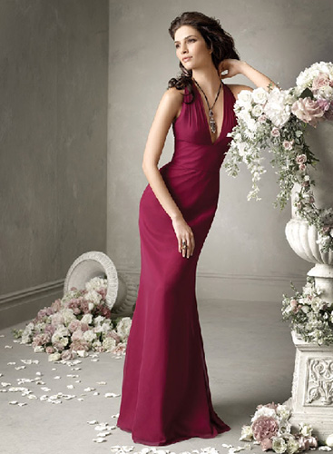
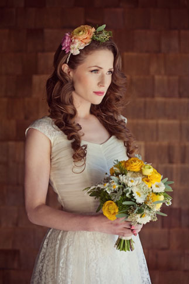

Bölge esnafının en saygın kişilerinden olan Ahmet Kayan, Kocapınarlılar markasının yaratıcısıdır. 1972'de sektöre manifaturacılık yaparak başlayan Ahmet Bey, kumaş konusundaki kalite ve maliyet anlayışında yıllar boyunca uzmanlaşmıştır. Dönemin gereksinim ve eksiklerinden yola çıkarak hazır giyim sektörüne Düğün için gerekli olan tüm kalemlerde satış gerçekleştirerek giren alaylı bir profesyoneldir. 2012 yılında vefatının ardından marka anlayışı kurumsal olarak devam etmekte ve gelişmektedir.
Marka, 1972 çeşitli şekilde en iyi ve kaliteli kumaşları satmak amacıyla manifaturacı olarak açılmıştır. Ardından başta gelinlik olmak üzere yüksek kalitede ürün satmak amacıyla Tahtaavdan Sokaktaki dükkanında 1974 yılında sektöre girmiştir. Balıkesir'deki başarısı ile hızlı bir büyüme gerçekleştirmiş ve Yaymacılar Caddesindeki oteli satın alarak 1994'de bölgedeki en büyük butiğini açmıştır. 2012 yılında ise marka diğer aile bireyleri tarafından daha dinamik ve yenilikçi olarak devam etmektedir.
çeşitli ve özgün modeller
ve esnek fiyat aralıkları ile..

Türkiye'nin en yetenekli modacıların gelinlik tasarımları ve fark yaratan güncel koleksiyon seçenekleriyle
Göz alıcı bir görünüm ve üzerinize tam olarak oturan eşsiz kumaşların hayat bulduğu ürünler

Nişan, Kına, Bekarlığa Veda ya da Mezuniyet için en şık ve göz alıcı bir tarzı bizim modellerimizle yakalabilirsiniz .

Taç, Duvak, Ayakkabı, Buket, Tesettür, Kravat gibi çok çeşitli ve esnek fiyatlarıyla sizlerle
Butiğimize gelip, çayımızı içebilir
yeni ürünlerimizi görebilirsiniz.
Yaymacılar Caddesi No:39 Balıkesir
+ Sorularınız için arayın;
0266 241 3699
0553 239 7967 / Tuğba KAYAN